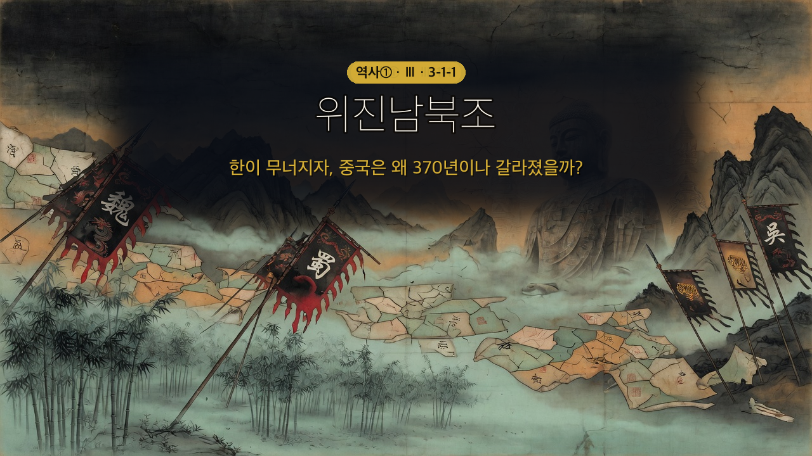

역사① Ⅲ단원 3-1-1 — 한(漢)이 무너지자, 중국은 왜 370년이나 갈라졌을까? (위진 남북조)
한(漢)이 무너지자, 중국은 왜 370년이나 갈라졌을까?


역사① Ⅲ단원 3-1-1 — 한(漢)이 무너지자, 중국은 왜 370년이나 갈라졌을까? (위진 남북조)
🎙️ 북위의 어느 아침. 선비족 소녀 아단은 거울 앞에서 낯선 옷을 입는다. 어제까지 입던, 말 타기 편한 선비족 옷 대신 소매가 긴 한족(漢族) 옷. 이름도 선비식에서 한자 이름으로 바꿔야 하고, 말도 한족 말로 해야 한다. 모두 황제(효문제)의 명령이었다. "우리 것을 버리고, 왜 한족처럼 살아야 하지?" 아단의 이 질문에, 370년 갈라졌던 중국의 비밀이 들어 있다.
📌 학습 목표
- 후한 멸망 이후 위진 남북조의 분열이 어떻게 전개되었는지 인과관계로 설명할 수 있다.
- 북조와 남조의 정치·사회·문화 특징을 비교할 수 있다.
- 9품중정제가 문벌 귀족을 낳은 과정을 오늘날 '공정한 선발' 문제와 연결해 자기 관점으로 서술할 수 있다.
✨ 오늘의 고급 단어
| 단어 | 쉽게 말하면 |
| 화북(華北) | 황허강 유역의 중국 북부 — 옛 중국 문명의 중심지 |
| 강남(江南) | 창장강(양쯔강) 이남의 중국 남부 |
| 호족(豪族) | 지방의 힘센 토착 세력 — 땅과 사람을 많이 거느린 유력 가문 |
| 문벌 귀족(門閥貴族) | 門(가문)+閥(공로·지위) — 대대로 높은 관직을 독차지해 '가문의 이름값'이 곧 신분이 된 귀족 |
| 9품중정제(九品中正制) | 九品(아홉 등급)으로 나눠 中正(중정관)이 추천하는 制(제도) — 인물을 9등급으로 매겨 관리로 뽑음 |
| 한화(漢化) 정책 | 북방 민족이 한족의 옷·말·제도를 따르게 한 정책 ('漢化' = 한족처럼 됨) |
| 청담(淸談) 사상 | 어지러운 정치 대신 맑고(淸) 고상한 이야기(談)를 나눈 풍조 |
| 도교(道敎) | 민간 신앙과 도가 사상이 결합한 중국의 토착 종교 |
📖 1단계: 400년 갔던 한(漢)이 무너지자, 무슨 일이?
앞서 배운 한(漢)은 약 400년간 동아시아의 중심이었다. 그러나 후한이 멸망한 뒤, 중국은 하나로 모이지 못하고 ① 세 나라로 갈라졌다(삼국 시대). 위를 이은 ②이 잠시 세 나라를 통일했지만, 왕실 다툼으로 혼란이 계속되며 곧 무너졌다.
(교과서 원문: "후한이 멸망한 뒤 중국은 위·촉·오로 나뉘었다. 위를 이은 진(晉)이 세 나라를 통일하였으나 왕실의 다툼으로 혼란이 계속되었다." — 비상교육 역사① p.67)
📖 2단계: 북쪽엔 유목민, 남쪽엔 피란민 — 분열의 지도
진이 흔들리자 북방의 유목 민족인 ③가 화북으로 밀려 들어와 여러 나라를 세웠다(5호 16국). 북방 민족에게 밀려난 한족은 창장강 남쪽인 ④으로 내려가 ⑤을 세웠다. 이후 선비족이 세운 ⑥가 화북을 통일했고, 강남에는 한족 왕조들이 차례로 이어졌다. 이렇게 한이 멸망한 뒤부터 ⑦가 다시 중국을 통일할 때까지의 약 370년을 위진 남북조 시대라고 한다.
(교과서 원문: "…한이 멸망한 이후부터 수가 중국을 통일하기까지의 시기를 위진 남북조 시대라고 한다." — 비상교육 역사① p.67)
📚 '5호 16국'이 뭐야? — 5호(五胡) = 화북으로 내려온 다섯 북방 민족(흉노·선비·갈·저·강). 16국 = 이들이 (일부 한족과 함께) 화북에 세운 여러 짧은 나라들(대표로 16개를 꼽음). 즉 "다섯 민족이 세운 열여섯 나라가 세워졌다 사라지길 반복한 약 130년의 혼란기"를 가리킨다. 이 어지러운 화북을 끝내 하나로 통일한 나라가 바로 선비족의 북위다.
💡 한 줄 지도: 후한 ➡️ 삼국(위·촉·오) ➡️ 진(晉) 통일 ➡️ 5호 16국 ➡️ 남북조(북조·남조)

📖 3단계: 북조 vs 남조 — 두 세계가 갈라지다
📚 왜 '북조·남조'? — 중국이 남북으로 갈라졌기 때문. 창장강 북쪽(화북) 왕조들 = 북조, 남쪽(강남) 왕조들 = 남조. 둘이 위아래로 나란히 맞선 시기라 합쳐서 '남북조'라 부른다.
화북을 차지한 북조는 유목 민족이 다수의 한족을 다스리는 세계였다. 북위의 ⑧는 오히려 한족 문화를 적극 받아들이는 한화(漢化) 정책을 폈다 — 선비족 옷과 말을 금지하고, 한족과의 결혼을 권장했다(앞의 아단 이야기). 한편 강남으로 피란한 한족이 세운 남조에서는 귀족 중심의 우아한 문화가 발달했다.
💡 효문제는 왜 자기 민족 문화를 버렸을까? — 선비족은 수가 적은데, 다스려야 할 한족은 훨씬 많았어. 힘으로만 누르면 반발이 크지. 그래서 한족의 글·제도·문화를 받아들여 "우리도 너희와 같다"며 한족의 마음을 얻고 나라를 안정시키려 한 거야. (도입에서 아단이 한족 옷을 입어야 했던 이유!)
⚖️ 2단원에서 배운 스파르타랑 비교해 봐! — 스파르타도 소수의 시민이 다수의 피지배민(헬로타이)을 다스리는 똑같은 문제를 안고 있었어. 그런데 해법은 정반대! 스파르타는 억누르고 분리(평생 군사 훈련·감시·공포)를 택했고, 효문제는 섞이고 동화(한화)를 택했지. 같은 문제, 정반대의 답 — 너라면 어느 쪽을 택했을까?

(교과서 원문: "북위는 한족의 제도와 문물을 받아들였다. 특히 효문제는 선비족의 복장과 언어를 금지하고, 한족과의 결혼을 권장하였다." — 비상교육 역사① p.67)
⚠️ 자주 하는 오해: "한화 = 한족이 북방 민족을 이긴 것"? 아니다. 북방 민족과 한족의 문화가 섞이며(융합) 중국 문화가 더 풍부해졌고, 이것이 다음 시대인 수·당 문화의 밑거름이 되었다.
📖 4단계: 추천으로 뽑았는데 왜 '금수저'만? — 9품중정제와 문벌 귀족
위진 남북조 시대에는 추천으로 관리를 뽑는 ⑨를 실시했다. 지역의 인물을 9개 등급으로 매겨 중앙에 추천하는 제도였다. 그런데 추천 권한을 쥔 사람들이 ⑩(지방의 유력 가문) 자제만 높은 등급으로 밀어주면서, 결국 대대로 관직을 독차지하는 ⑪이 생겨났다.
(교과서 원문: "위진 남북조 시대에는 추천으로 관리를 뽑는 9품중정제가 실시되었다. 그 결과 지방 호족이 중앙 정부로 나아갔고, 대대로 관직을 독차지하면서 문벌 귀족으로 성장하였다." — 비상교육 역사① p.67)

💡 ★ 핵심 포인트: 좋은 의도(추천)도 견제가 없으면 '기회의 세습'으로 변질된다.
🗳️ 오늘과 잇기 — 우리 선거관리위원회는 선거를 공정하게 하라고 헌법으로 독립성을 보장받는 기관이야. 그런데 고위직 자녀 특혜 채용 논란·투표 관리 부실이 드러나면서 "독립성은 큰데 견제가 약하다"는 지적을 받았어. 9품중정제처럼, 좋은 제도도 견제가 빠지면 변질될 수 있다는 거지.
📖 5단계: 어지러운 세상이 낳은 문화 — 불교·도교·청담
혼란한 시대일수록 사람들은 마음 둘 곳을 찾았다. 북조에서는 '황제는 곧 부처'라며 불교로 황제의 권위를 높였고, 거대한 ⑫이 세워졌다. 민간 신앙과 도가 사상이 결합한 ⑬도 발전했다. 남조에서는 어지러운 정치를 떠나 맑고 고상한 이야기를 나누는 ⑭ 사상이 유행했고(죽림칠현), 고개지의 그림·도연명의 시·왕희지의 ⑮ 같은 화려한 귀족 문화가 꽃폈다.
(교과서 원문: "북위에서는 '황제는 곧 부처'라고 하며 불교를 바탕으로 황제의 권위를 높이려고 하였다." / "동진과 남조에서는 화려하고 우아한 귀족 문화가 발달하였는데, 고개지의 그림, 도연명의 시, 왕희지의 서예 등이 유행하였다." — 비상교육 역사① p.68)
💡 석굴 사원·불상이 왜 그렇게 컸을까? — 거대 불상은 두 가지를 한 번에 했어. 황제에겐 '부처처럼 우러러보라'는 권위 장치(북위는 불상 얼굴을 황제 모습으로 새겼대), 백성에겐 전란 속에서 기댈 수 있는 마음 둘 곳. 그래서 황제가 앞장서 후원하니 불상이 폭발적으로 늘어난 거야.
📚 정의형 — 청담(淸談): 맑을 청, 말씀 담. 어지러운 현실 정치를 피해 노장(老莊) 사상과 철학을 논하던 귀족들의 풍조. 대나무 숲에 모였다는 '죽림칠현'이 대표한다.


🔗 핵심 정리 — 인과 사슬
후한 멸망 → 삼국(위·촉·오) → 진(晉) 통일 → 왕실 다툼으로 혼란 → 5호 16국(북방 민족 화북 진출) → 한족 강남 이주(동진) → [북조] 북위 효문제 한화 정책 ↔ [남조] 한족 귀족 문화 → 9품중정제 → 호족 성장 → 문벌 귀족(기회의 세습) → 불교(석굴 사원)·도교·청담(죽림칠현)·귀족 문화 발달 → 북방 + 한족 문화 융합 → 수·당 문화의 밑거름
💡 오늘의 한 줄: 갈라진 370년은 '혼란'이자, 유목과 한족이 섞여 다음 시대(수·당)를 준비한 '용광로'였다.
📊 한눈에 비교 — 북조 vs 남조
| 비교 항목 | 북조 (화북) | 남조 (강남) |
| 위치 | 황허강 유역(화북) | 창장강 이남(강남) |
| 지배층 | 북방 유목 민족(선비족 등) | 강남으로 피란한 한족 |
| 대표 왕조 | 북위 | 동진·송 등 한족 왕조 |
| 핵심 정책·특징 | 효문제의 한화 정책(융합) | 강남 개발·귀족 문화 |
| 대표 종교 | 불교('황제는 곧 부처')·석굴 사원 | 청담 사상·도교 |
| 대표 문화 | 불교 조각(석굴 사원) | 고개지 그림·도연명 시·왕희지 서예 |
| 신분 제도 | 9품중정제 → 문벌 귀족 | 9품중정제 → 문벌 귀족 |
| 역사적 의의 | 북방·한족 융합 → 수·당의 밑거름 | 강남 개발 → 훗날 중국 경제 중심 이동의 출발 |
❓ OX 퀴즈
| 번호 | 문장 | O/X |
| 1 | 위진 남북조 시대는 후한이 멸망한 뒤부터 수가 중국을 통일할 때까지의 시기다. | |
| 2 | 효문제의 한화 정책은 한족 문화를 금지하고 선비족 문화를 지키려는 정책이었다. | |
| 3 | 9품중정제는 시험을 치러 관리를 뽑는 제도였다. | |
| 4 | 남조에서는 청담 사상과 귀족 문화가 발달하였다. |
✏️ 활동 1. 효문제의 신하가 되어 — 한화 정책 결재판
효문제가 한화 정책 3개 안건을 내놓았다. 당신이 효문제의 신하라면 각 안건에 찬성/반대와 이유를 쓰라. (정답 없음 · 근거가 핵심)
| 안건 | 찬성/반대 | 이유 |
| ① 선비족 옷을 금지하고 한족 옷을 입게 한다 | ||
| ② 선비족 말을 금지하고 한족 말을 쓰게 한다 | ||
| ③ 선비족과 한족의 결혼을 권장한다 |
✏️ 활동 2. 북조 vs 남조 비교표 채우기
빈칸을 채워 두 세계의 차이를 정리해 보자.
| 비교 항목 | 북조 | 남조 |
| 지배층 | ||
| 대표 왕조 | ||
| 핵심 특징 | ||
| 대표 문화 |
✏️ 활동 3. 더 생각해 보기 (자기 생각 서술)
9품중정제는 분명 '추천으로 인재를 뽑자'는 좋은 의도로 시작했는데, 왜 결국 '문벌 귀족이 자리를 세습하는' 불공정한 제도로 변했을까? 오늘날에도 '추천서·스펙·인맥'으로 사람을 뽑는 경우가 있다. 공정한 선발이 되려면 무엇이 필요할지, 위진 남북조의 사례에서 배운 점을 들어 너의 생각을 써 보자. (AI에게 정답을 묻기보다, 네 경험과 판단으로)
다음 시간 예고
다음 시간 예고: 수·당의 통일과 동아시아 문화권 — 분열을 끝낸 수가 '과거제'로 문벌 귀족을 흔들고, 율령·불교·유교·한자가 한·중·일을 하나의 문화권으로 묶는다.